Los pollitos dicen
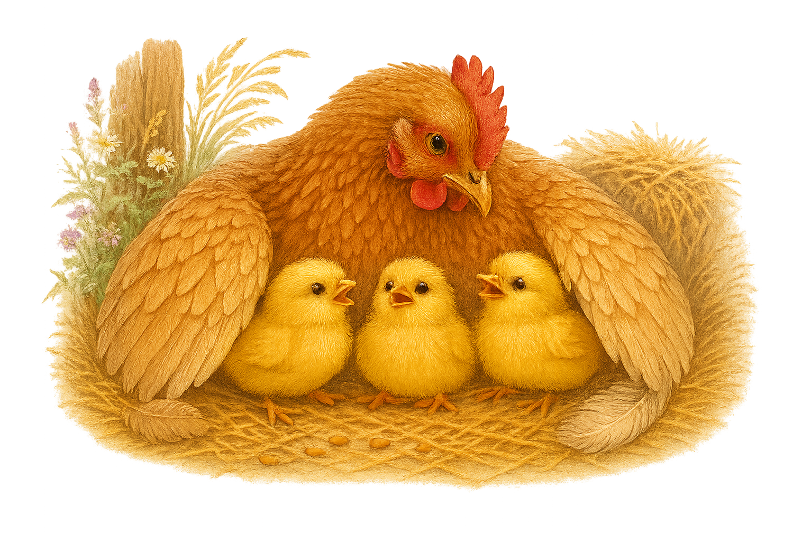
Los pollitos dicen
pío, pío, pío
cuando tienen hambre,
cuando tienen frío.
La gallina busca
el maíz y el trigo,
les da la comida
y les presta abrigo.
Bajo de sus alas,
acurrucaditos,
hasta el otro día
duermen los pollitos.
Cinco lobitos
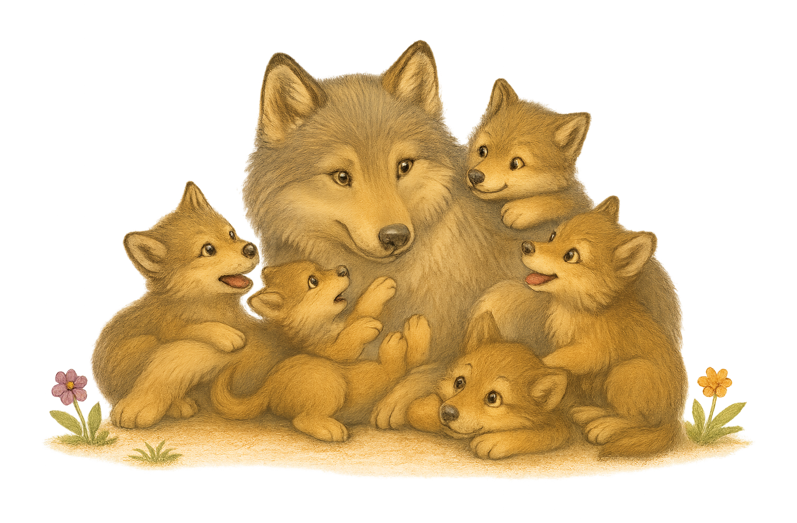
Cinco lobitos
tiene la loba,
cinco lobitos
detrás de una escoba.
Cinco tenía,
cinco criaba,
y a todos ellos
teta les daba.
Arroz con leche
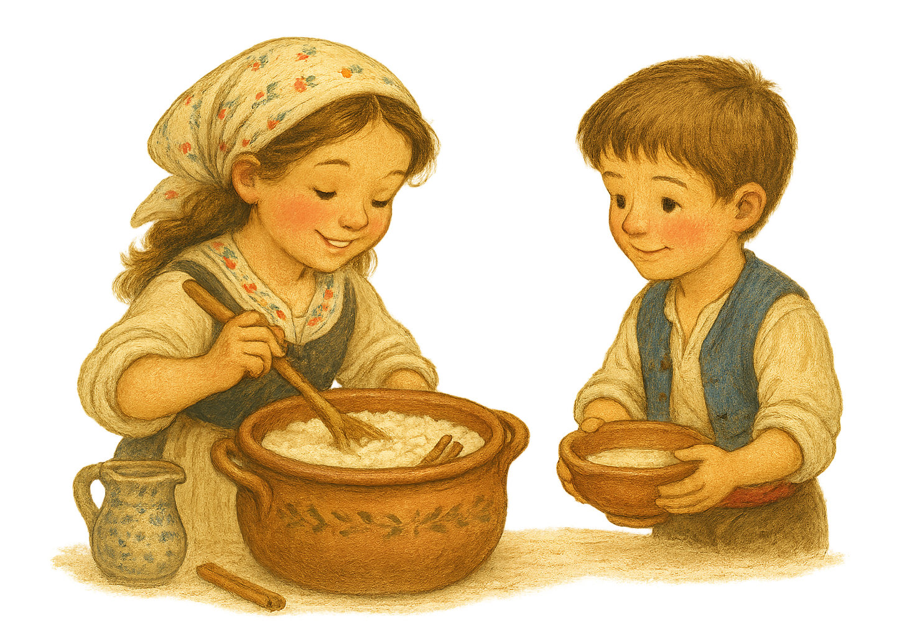
Arroz con leche,
me quiero casar
con una señorita
de San Nicolás.
Que sepa coser,
que sepa bordar,
que sepa abrir la puerta
para ir a jugar.
Debajo de un botón
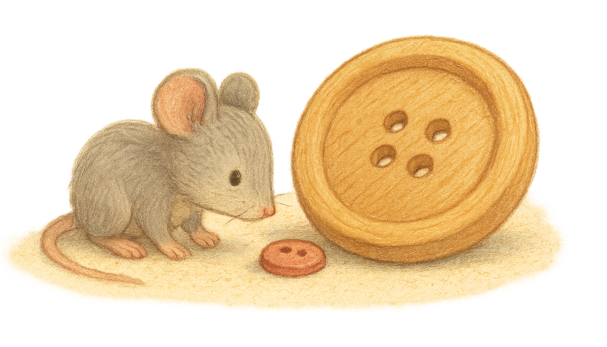
Debajo de un botón, ton, ton,
que encontró Martín, tín, tín,
había un ratón, ton, ton,
¡ay, qué chiquitín, tín, tín!
Ay, qué chiquitín, tín, tín,
era aquel ratón, ton, ton,
que encontró Martín, tín, tín,
debajo de un botón, ton, ton.
Pin Pon
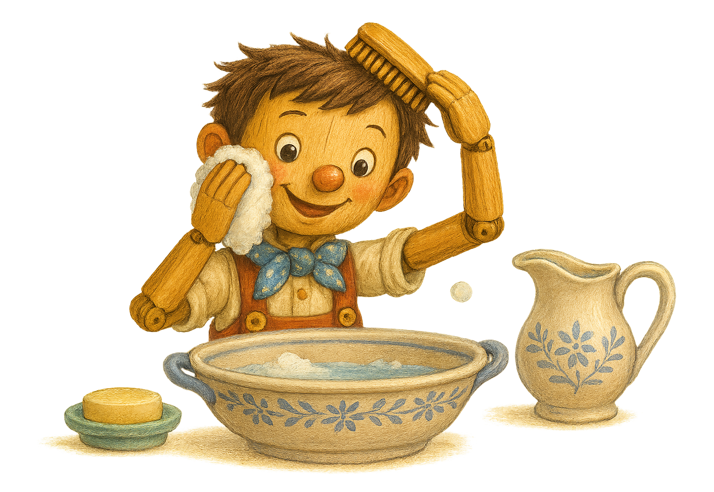
Pin Pon es un muñeco
muy guapo y de cartón,
se lava su carita
con agua y con jabón.
Se desenreda el pelo
con peine de marfil,
y aunque se da tirones
no llora ni hace así.
Sana, sana & Que llueva
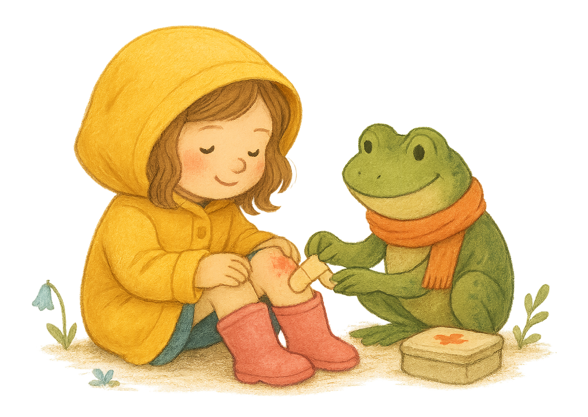
Sana, sana,
colita de rana,
si no sana hoy
sanará mañana.
Que llueva, que llueva,
la Virgen de la Cueva,
los pajaritos cantan,
las nubes se levantan.
¡Que sí, que no,
que caiga un chaparrón!
Un elefante

Un elefante se balanceaba
sobre la tela de una araña.
Como veía que resistía,
fue a llamar a otro elefante.
Cucú cantaba la rana

Cucú, cucú,
cantaba la rana.
Cucú, cucú,
debajo del agua.
Cucú, cucú,
pasó un caballero.
Cucú, cucú,
con capa y sombrero.
Caracol, col, col

Caracol, col, col,
saca los cuernos al sol,
que tu padre y tu madre
también los sacó.
Chuchuwa

Chuchuwa, chuchuwa
Chuchuwa-wa-wa
¡Compañía! Repite el coro y suma un movimiento cada vez.
Brazo extendido
Puño cerrado
Dedo hacia arriba
Hombro fruncido
Cabeza hacia atrás
Cola hacia atrás
Pie de pingüino
Lengua afuera
Ta-ta-ta, ta-ta-ta
Ta-ta-ta-ta-ta
Estrellita, ¿dónde estás?

Estrellita, ¿dónde estás?
Me pregunto qué serás.
En el cielo y en el mar,
un diamante de verdad.
Estrellita, ¿dónde estás?
Me pregunto qué serás.
El patio de mi casa
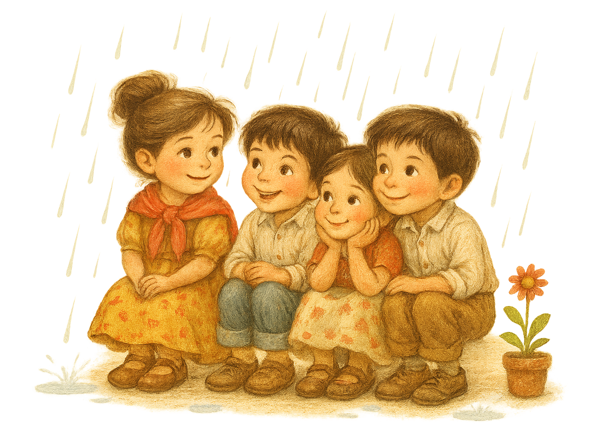
El patio de mi casa
es particular,
cuando llueve se moja
como los demás.
Agáchate,
y vuélvete a agachar,
que los agachaditos
no saben bailar.
H, I, J, K, L, M, N, A,
que si tú no me quieres,
otro amiguito me querrá.
Chocolate, molinillo,
¡corre, corre que te pillo!
Barco chiquitito
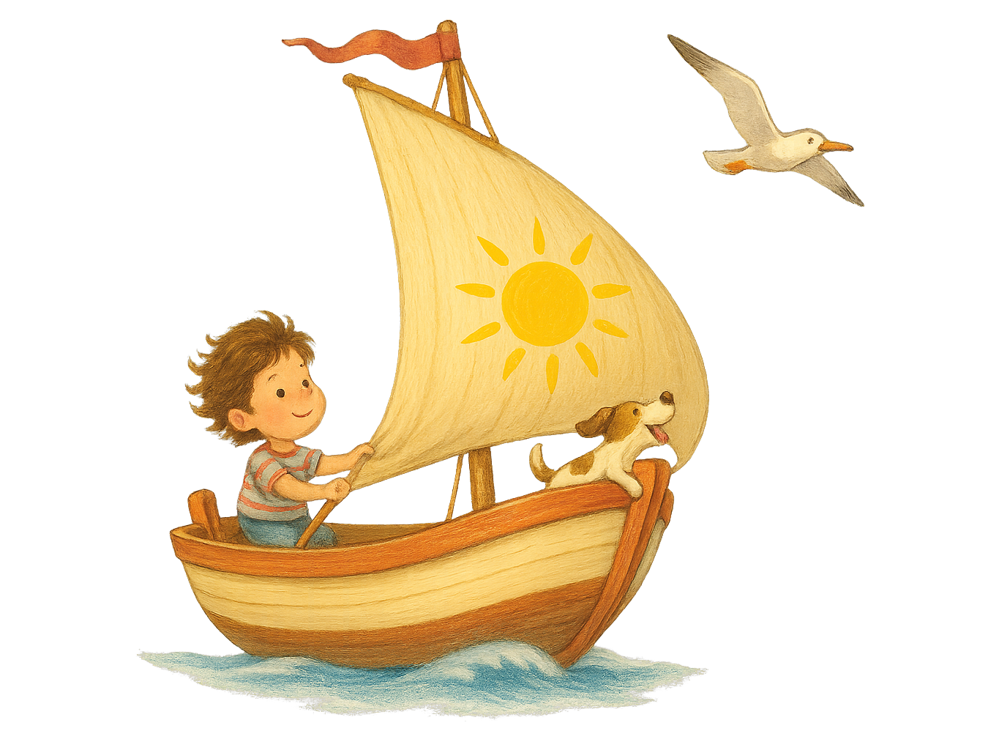
Había una vez un barco chiquitito,
había una vez un barco chiquitito,
que no podía, que no podía,
que no podía navegar.
Pasaron un, dos, tres,
pasaron un, dos, tres,
pasaron un, dos, tres,
cuatro, cinco, seis semanas,
y el barquito, y el barquito,
y el barquito no podía navegar.
Y si esta historia no les parece larga,
y si esta historia no les parece larga,
volveremos, volveremos,
volveremos a empezar.
A la víbora de la mar
A la víbora, víbora de la mar, de la mar,
por aquí pueden pasar.
Los de adelante corren mucho,
los de atrás se quedarán.
Una mexicana que fruta vendía,
ciruela, chabacano, melón o sandía.
Verbena, verbena,
jardín de matatena,
verbena, verbena,
campanita de oro,
dejen pasar a toda la familia,
menos al de atrás,
tras, tras, tras.
Naranja dulce
Naranja dulce,
limón partido,
dame un abrazo
que yo te pido.
Si fueran falsos
mis juramentos,
en otros tiempos
se olvidarán.
Toca la marcha,
mi pecho llora,
adiós, señora,
yo ya me voy.
Antón Pirulero
Antón, Antón,
Antón Pirulero,
cada cual, cada cual,
atiende su juego,
y el que no lo atienda,
pagará, pagará
una prenda.
Huachí toritó
Del árbol nació la rama,
de la rama nació la flor,
de la flor nació María,
de María nació el Señor.
Huachito, torito,
torito del corralito.
Huachito, torito,
torito del corralito.
Al niño recién nacido
todos le ofrecen un don;
yo soy pobre, nada tengo,
le ofrezco mi corazón.
Huachito, torito,
torito del corralito.
Buenos días su señoría
Muy buen día, su señoría,
mantantirulirulá.
¿Qué quería su señoría?
mantantirulirulá.
Yo quería una de sus hijas,
mantantirulirulá.
La más bonita que haya aquí,
mantantirulirulá.
¿Qué oficio le pondremos?
mantantirulirulá.
Le pondremos de pianista…
—Ese oficio no le agrada.
mantantirulirulá.
Le pondremos de princesita…
—¡Ese oficio sí le agrada!
Celebremos todos juntos,
mantantirulirulá.
Mi gallito
Mi gallito se ha perdido, la, la,
pobrecito, la, la, pobrecito, la, la,
y no lo puedo encontrar.
Lo he buscado en Alemania, la, la,
en Italia, la, la, en Italia, la, la,
y también en el Japón.
Tiene cresta colorada, la, la,
tiene plumas amarillas, la, la,
aletea, la, la, aletea, la, la,
y también dice: ¡quiriquiquí!
Los cinco patitos
Cinco patitos salieron a jugar,
por la colina y muy lejos de su hogar.
La mamá pata dijo: cuac, cuac, cuac, cuac,
pero solo cuatro patitos volvieron a jugar.
Cuatro patitos salieron a jugar…
(sigue contando hacia atrás, hasta que no vuelve ninguno)
La mamá pata triste salió a buscar,
y cuac, cuac, cuac, cuac, se puso a llamar.
Y los cinco patitos, sanos y contentos,
regresaron todos a jugar.
Doña Blanca
Doña Blanca está cubierta
con pilares de oro y plata;
romperemos un pilar
para ver a doña Blanca.
¿Quién es ese jicotillo
que anda en pos de doña Blanca?
—Yo soy ese jicotillo
que anda en pos de doña Blanca.
(El jicotillo pregunta: «¿de qué es este pilar?».
Cuando alguien responde «¡de papel!»… ¡todos a correr!)
Tortillitas para mamá
Tortillitas para mamá,
tortillitas para papá;
las bonitas para mamá,
las quemaditas para papá.
Aserrín, aserrán
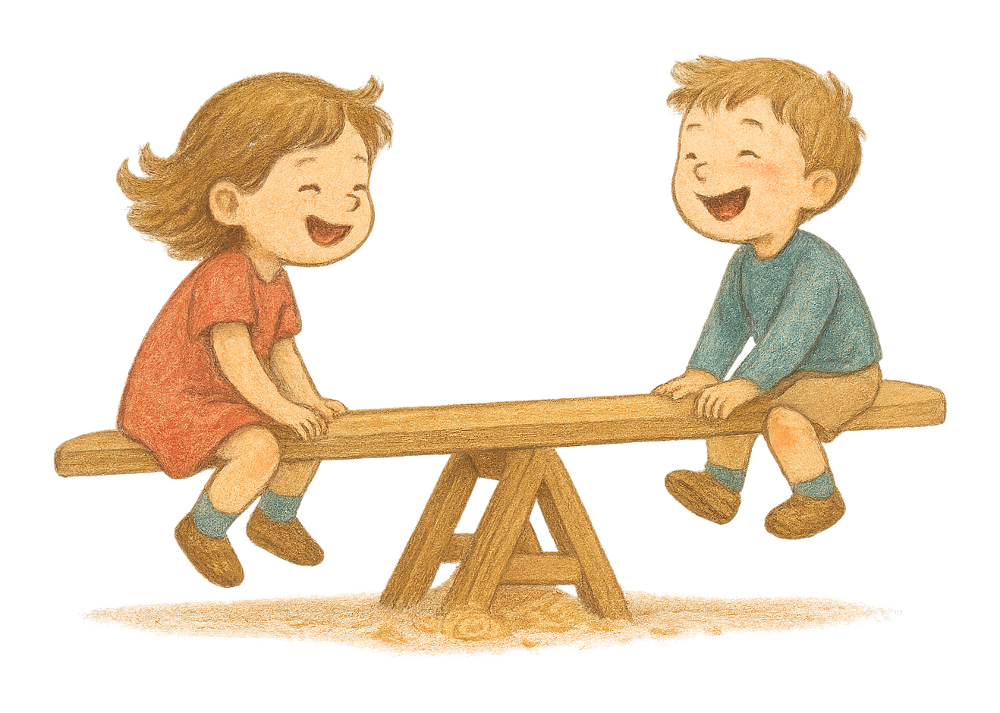
Aserrín, aserrán,
los maderos de San Juan.
Piden pan, no les dan;
piden queso, les dan hueso,
se les queda en el pescuezo
y se sientan a llorar
en las puertas del zaguán,
¡con el triqui, triquitrán!
Tengo una muñeca
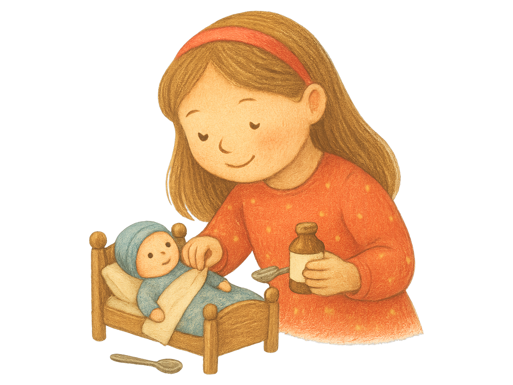
Tengo una muñeca vestida de azul,
con su camisita y su canesú.
La saqué a paseo y se me constipó,
la tengo en la cama con mucho dolor.
Esta mañanita me dijo el doctor
que le dé jarabe con el tenedor.
Al corro de la patata
Al corro de la patata,
comeremos ensalada,
lo que comen los señores:
naranjitas y limones.
¡Achupé, achupé,
sentadita me quedé!
La araña pequeñita
La araña pequeñita
subió, subió, subió.
Vino la lluvia
y se la llevó.
Salió el sol
y todo lo secó,
y la araña pequeñita
subió, subió, subió.
Vamos a contar mentiras
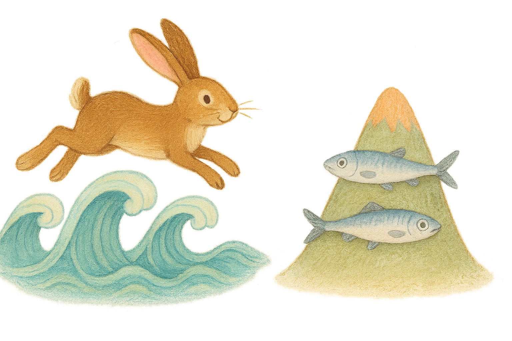
Ahora que vamos despacio,
vamos a contar mentiras, ¡tralará!
Por el mar corren las liebres,
por el monte las sardinas, ¡tralará!
Y en el hueco de un peral
encontré un peral cargado,
cargadito de manzanas, ¡tralará!
Cogí piedras para tirar
y me cayeron avellanas, ¡tralará!
Pinto, pinto, gorgorito
Pinto, pinto, gorgorito,
¿dónde vas tú tan bonito?
A la era verdadera,
pim, pam, pum,
¡fuera!
Los diez perritos
Yo tenía diez perritos,
yo tenía diez perritos,
uno se cayó en la nieve,
no me quedan más que nueve.
De los nueve que quedaban,
uno se comió un bizcocho,
no me quedan más que ocho.
De los ocho que quedaban…
(sigue contando hacia atrás, hasta que no quede ninguno)
Pero apenas los silbé,
enseguida los llamé,
¡y los diez volvieron a jugar con él!
San Serenín
San Serenín, de la buena, buena vida,
San Serenín, de la buena vida.
Hacen así, así, los zapateros,
hacen así, así, ¡qué bien!
Hacen así, así, los panaderos,
hacen así, así, ¡qué bien!
Hacen así, así, los carpinteros,
hacen así, así, ¡qué bien!
El florón
El florón está en mis manos,
en mis manos estaba el florón;
y el niño que lo tenga
que lo guarde con mucho primor.
¿Quién lo tiene?
¿Quién lo tiene?
¡A ver quién lo adivinó!
A la rueda rueda
A la rueda, rueda,
de pan y canela,
dame un besito
y vete a la escuela.
Si no quieres ir,
acuéstate a dormir
en la hierbabuena
y en el toronjil.
Lobo, ¿estás?
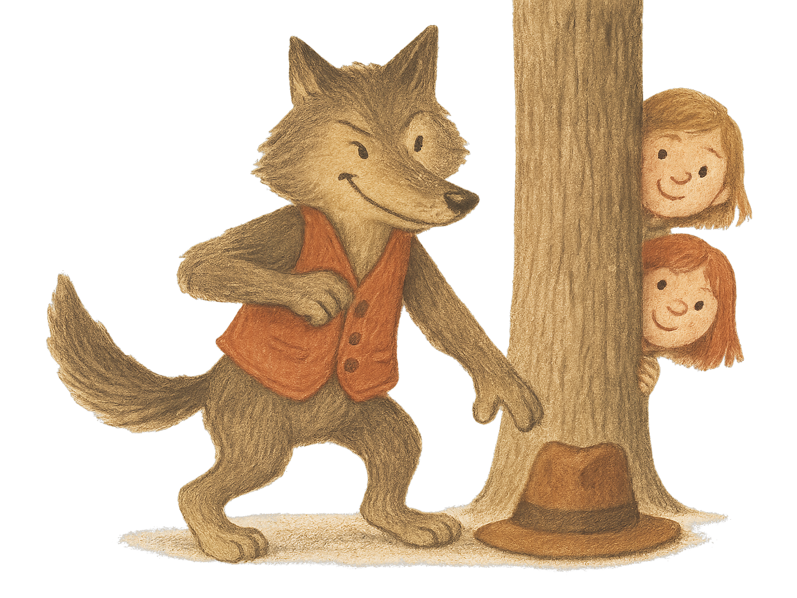
Jugaremos en el bosque
mientras el lobo no está,
porque si el lobo aparece
a todos nos comerá.
¿Lobo, estás?
—Me estoy poniendo el pantalón.
¿Lobo, estás?
—Me estoy poniendo el chaleco.
¿Lobo, estás?
—Me estoy poniendo el sombrero…
¿Lobo, estás?
—¡Sí, y salgo a buscarlos!
Martín Pescador
Martín Pescador,
¿me dejarás pasar?
—Pasarás, pasarás,
pero el último quedará.
El de adelante corre mucho,
el de atrás se quedará.
—¿Qué fruta prefieres,
pera o manzana?
La farolera
La farolera tropezó
y en la calle se cayó,
y al pasar por un cuartel
se enamoró de un coronel.
¡Alcen la bandera
para que pase la farolera,
de la puerta al sol,
sube la escalera
y enciende el farol!
La mar estaba serena
La mar estaba serena,
serena estaba la mar.
Ahora prueba con cada vocal:
La mar astaba sarana…
Le mer estebe serene…
Li mir istibi sirini…
Lo mor ostobo sorono…
Lu mur ustubu surunu…
El sapo no se lava el pie
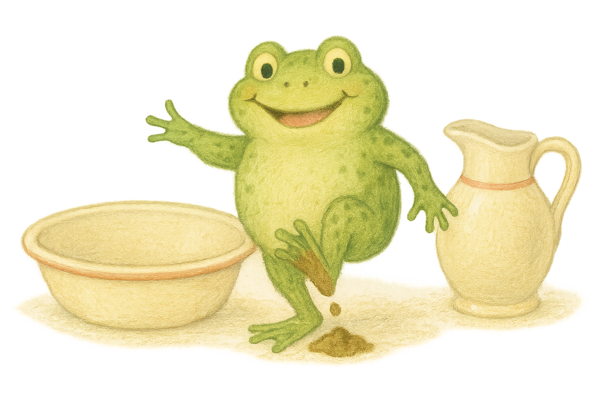
El sapo no se lava el pie,
no se lo lava porque no quiere;
él vive en la laguna,
y no se lava el pie porque no quiere.
¡Qué apestoso!
(¿Te animas a cantarla cambiando todas las vocales por "a"?)
Caballito blanco
Caballito blanco,
llévame de aquí,
llévame a mi pueblo
donde yo nací.
Tengo, tengo, tengo,
tú no tienes nada,
tengo tres ovejas
en una cabaña.
Una me da leche,
otra me da lana,
y otra mantequilla
para la semana.
Fray Jacobo
Fray Jacobo, Fray Jacobo,
¿duerme ya? ¿duerme ya?
Suenan las campanas,
suenan las campanas,
din, don, dan,
din, don, dan.
(Se puede cantar en canon: unos empiezan, y cuando llegan a
"¿duerme ya?" los demás empiezan desde el principio.)
Señora Santa Ana
Señora Santa Ana,
¿por qué llora el niño?
Por una manzana
que se le ha perdido.
Vamos a la huerta,
cortaremos dos:
una para el niño
y otra para vos.
Un, dos, tres, momia es
Un, dos, tres…
¡momia es!
(El que cuenta se da vuelta hacia la pared y dice "un, dos, tres,
momia es" mientras los demás corren. Al terminar, se voltea de golpe:
¡todos deben quedar congelados como momias! Quien se mueva,
vuelve a la línea de salida.)
Arriba Juan
Arriba Juan, arriba Juan,
ya cantó el gallito.
—Ay no, mamá, ay no, mamá,
es muy tempranito.
Arriba Juan, arriba Juan,
hay que ir a la escuela.
—Ay no, mamá, ay no, mamá,
me duele la muela.
Arriba Juan, arriba Juan,
pasan los soldados.
—Ay sí, mamá, ay sí, mamá,
ya estoy levantado.
Una rosa cayó del cielo
Del cielo cayó una rosa,
mi mamá la recogió,
se la puso en la cabeza,
¡qué bonita le quedó!
Pajarito del cielo
Pajarito del cielo,
que en mis pies se posó,
con el pico un mensaje
de mamá me entregó.
Pajarito del cielo,
que regresas allá,
yo contigo quisiera
ir a ver a mamá.
Los esqueletos
Cuando el reloj marca la una,
los esqueletos salen de su tumba…
tumba, que tumba, que tumba, tumba, tumba.
A las dos, comen arroz;
a las tres, se vuelven al revés;
a las cuatro, van al teatro…
(sigue contando las horas, ¡hasta que a las diez
se duermen otra vez!)
Las mañanitas
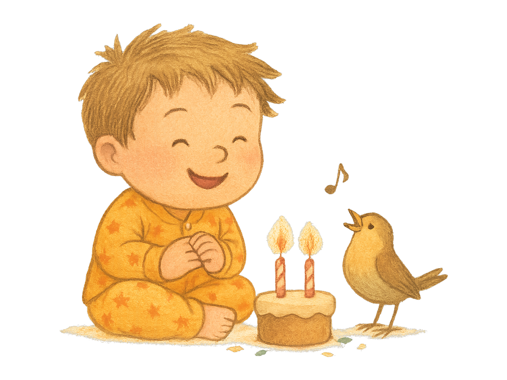
Estas son las mañanitas
que cantaba el rey David;
hoy por ser día de tu santo
te las cantamos a ti.
Despierta, mi bien, despierta,
mira que ya amaneció,
ya los pajarillos cantan,
la luna ya se metió.
Mambrú se fue a la guerra
Mambrú se fue a la guerra,
¡qué dolor, qué dolor, qué pena!
Mambrú se fue a la guerra,
no sé cuándo vendrá.
Do-re-mi, do-re-fa,
no sé cuándo vendrá.
Si vendrá por la Pascua,
¡mire usted, mire usted, qué gracia!
si vendrá por la Pascua,
o por la Trinidad.
Do-re-mi, do-re-fa,
o por la Trinidad.
El señor don Gato
Estaba el señor don Gato
sentadito en su tejado,
¡marramiau, miau, miau!
sentadito en su tejado.
Ha recibido una carta
por si quiere ser casado,
¡marramiau, miau, miau!
por si quiere ser casado,
con una gatita blanca,
sobrina de un gato pardo.
¡marramiau, miau, miau!
sobrina de un gato pardo.
El gato, por ir a verla,
se ha caído del tejado;
¡marramiau, miau, miau!
se ha caído del tejado.
Al olor de las sardinas
el gato ha resucitado;
¡marramiau, miau, miau!
el gato ha resucitado.
Por eso dice la gente:
siete vidas tiene un gato.
¡marramiau, miau, miau!
siete vidas tiene un gato.
Gallinita ciega
Gallinita ciega,
¿qué se te ha perdido?
—Una aguja y un dedal.
—Da tres vueltas
y los encontrarás.
(Quien hace de "gallinita" se tapa los ojos, da tres vueltas,
y trata de atrapar a los demás guiándose solo por sus voces.)
Cabeza, hombros, rodillas y pies
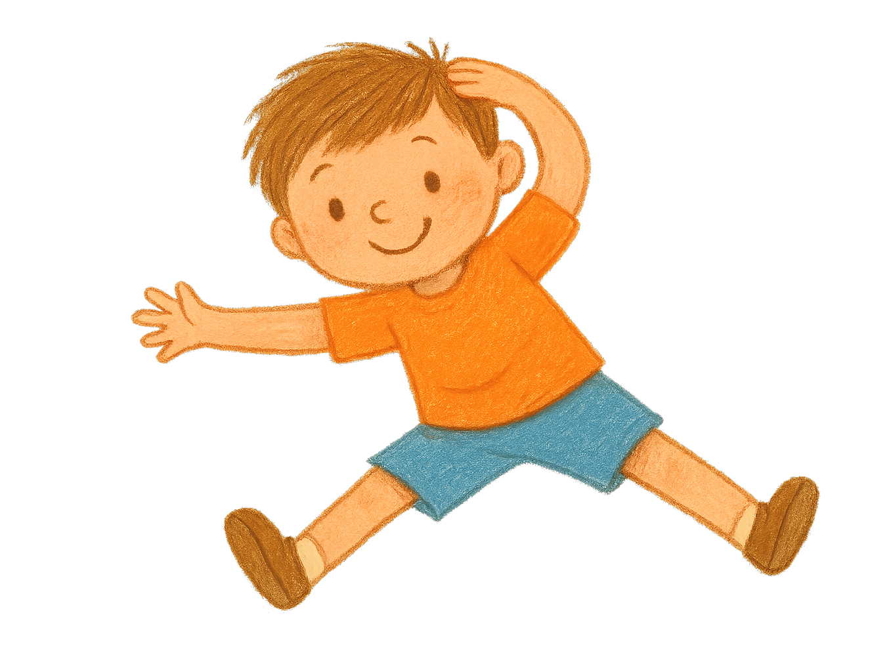
Cabeza, hombros, rodillas y pies,
rodillas y pies,
cabeza, hombros, rodillas y pies,
rodillas y pies,
ojos, orejas, boca y nariz,
cabeza, hombros, rodillas y pies,
rodillas y pies.
(Cántala tocando cada parte del cuerpo, ¡y cada vez más rápido!)
Ratón que te pilla el gato
Ratón que te pilla el gato,
ratón que te va a pillar;
si no te pilla esta noche,
mañana te pillará.
(En corro, dos niños quedan en el centro: uno hace de gato
y el otro de ratón. ¡A correr!)
La cucaracha
La cucaracha, la cucaracha,
ya no puede caminar,
porque no tiene, porque le falta,
una patica para andar.
El coquí
El coquí, el coquí,
a mí me encanta;
es tan lindo el cantar
del coquí.
Por las noches,
al ir a acostarme,
me adormece
cantando así:
¡Coquí, coquí, coquí,
qui, qui, qui!
Tin Marín
De tin marín,
de dos pingüé,
cúcara, mácara,
títere fue.
Yo no fui,
fue Teté;
pégale, pégale,
al que fue.
Saco una manita
Saco una manita,
la hago bailar,
la cierro, la abro
y la vuelvo a guardar.
Saco la otra manita,
la hago bailar,
la cierro, la abro
y la vuelvo a guardar.
Saco las dos manitas,
las hago bailar,
las cierro, las abro
y las vuelvo a guardar.
Kharwitacha pasaski
¿Ma kharwitacha pasaski?
—Rosas pata.
¿Ma kharwitacha pasaski?
—Chappi calle.
Juego de llamitas:
todos hacen una fila.
La última llamita corre
por el camino contrario
para que no la atrapen.
—Rosas pata.
¿Ma kharwitacha pasaski?
—Chappi calle.
Juego de llamitas:
todos hacen una fila.
La última llamita corre
por el camino contrario
para que no la atrapen.
Tunupan samiripa
Sawt’ir, sawt’ir, sumax imilla,
thaya luman, thaya pampana,
lupi lupina uñar sawt’iri,
sawt’ir, sawt’ir, sumax imillita.
Suni luman pinkill tuqht’iri,
wichhu pampam suma khuyt’iri,
qarwa awatiri, q’uraw k’antiri,
taqi fistan sumax thuqt’asiri.
Qaputamasa, sawutamasa,
taqi munkañaway,
mismitamasa, k’anatamasa,
taqi munkañaway.
Sumax kullak, sumax jilata,
taqiw, taqiw irnaqañani,
sumax Bolivia markasata.
thaya luman, thaya pampana,
lupi lupina uñar sawt’iri,
sawt’ir, sawt’ir, sumax imillita.
Suni luman pinkill tuqht’iri,
wichhu pampam suma khuyt’iri,
qarwa awatiri, q’uraw k’antiri,
taqi fistan sumax thuqt’asiri.
Qaputamasa, sawutamasa,
taqi munkañaway,
mismitamasa, k’anatamasa,
taqi munkañaway.
Sumax kullak, sumax jilata,
taqiw, taqiw irnaqañani,
sumax Bolivia markasata.
Niño Manuelito
Niño Manuelito qué bonito sois,
junto a tu cunita grano de oro sois.
Ya viene la vaca con el carretón,
trayendo la leche para el niño Dios.
María lloraba, perdió su pañal,
San Juan lo tenía en el romeral.
Destrencen las trenzas, vuelvan a trenzar,
que el rey de los cielos se ha de coronar.
junto a tu cunita grano de oro sois.
Ya viene la vaca con el carretón,
trayendo la leche para el niño Dios.
María lloraba, perdió su pañal,
San Juan lo tenía en el romeral.
Destrencen las trenzas, vuelvan a trenzar,
que el rey de los cielos se ha de coronar.
Pasará, pasará mi barquito
Pasará, pasará mi barquito,
el último se quedará.
Dos niños hacen un puente
y eligen en secreto dos nombres:
frutas, colores o lugares.
La fila canta al pasar por debajo.
El último escoge un nombre
y se une a ese lado.
el último se quedará.
Dos niños hacen un puente
y eligen en secreto dos nombres:
frutas, colores o lugares.
La fila canta al pasar por debajo.
El último escoge un nombre
y se une a ese lado.
Suri sikuri
Danza andina de Bolivia
Suri sikuri acompaña los sikus
y evoca el paso cadencioso del suri,
el ñandú andino.
Prueba estos movimientos:
pasos pequeños, suaves y atentos;
un brazo sostiene el tocado
y el otro dibuja formas en el aire.
Esta es una tarjeta de movimiento,
no una transcripción de canción.
Suri sikuri acompaña los sikus
y evoca el paso cadencioso del suri,
el ñandú andino.
Prueba estos movimientos:
pasos pequeños, suaves y atentos;
un brazo sostiene el tocado
y el otro dibuja formas en el aire.
Esta es una tarjeta de movimiento,
no una transcripción de canción.
El sebucán
Nosotros somos los indios,
los indios de Pariaguán,
que venimos a bailar
este lindo sebucán.
Aquí estamos las guarichas
tejiendo este sebucán,
y si nos equivocamos,
mal tejido quedará.
Con cintas de colores,
se trenza y se destrenza
alrededor del palo.
los indios de Pariaguán,
que venimos a bailar
este lindo sebucán.
Aquí estamos las guarichas
tejiendo este sebucán,
y si nos equivocamos,
mal tejido quedará.
Con cintas de colores,
se trenza y se destrenza
alrededor del palo.
Tamboré
Que cante la niña, tamboré,
que cante el niñito, tamboré,
que cante la rana, tamboré,
que cante la mona, tamboré…
Dos filas se miran de frente.
Con cada verso intercambian lugar;
cuando nombran un animal,
lo imitan al caminar.
que cante el niñito, tamboré,
que cante la rana, tamboré,
que cante la mona, tamboré…
Dos filas se miran de frente.
Con cada verso intercambian lugar;
cuando nombran un animal,
lo imitan al caminar.
Los Chimichimitos
Los chimichimitos
estaban bailando
el coro corito:
¡Tamboré!
Que baile la niña,
¡Tamboré!
Que baile el niñito,
¡Tamboré!
En el corro, la pareja nombrada
sale al centro para bailar.
estaban bailando
el coro corito:
¡Tamboré!
Que baile la niña,
¡Tamboré!
Que baile el niñito,
¡Tamboré!
En el corro, la pareja nombrada
sale al centro para bailar.
¿Dónde estabas tú, periquito?
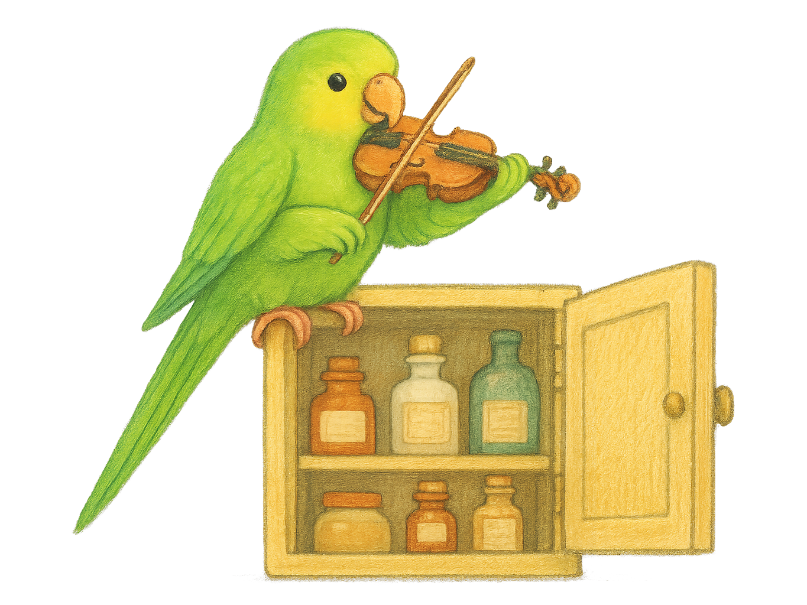
¿Dónde estabas tú, periquito?
En el botiquín.
¿Y qué hacías tú, periquito?
Tocando el violín.
¿Cómo lo tocabas, perico?
Juiqui, juiqui, juin,
juiqui, juiqui, juiqui,
juiqui, juiqui, juin.
En el botiquín.
¿Y qué hacías tú, periquito?
Tocando el violín.
¿Cómo lo tocabas, perico?
Juiqui, juiqui, juin,
juiqui, juiqui, juiqui,
juiqui, juiqui, juin.
Arepita de manteca
Arepita de manteca
pa’ mamá que da la teta.
Arepita de cebada,
¡pa’ papá que no da nada!
pa’ mamá que da la teta.
Arepita de cebada,
¡pa’ papá que no da nada!
Tortuguita Concha
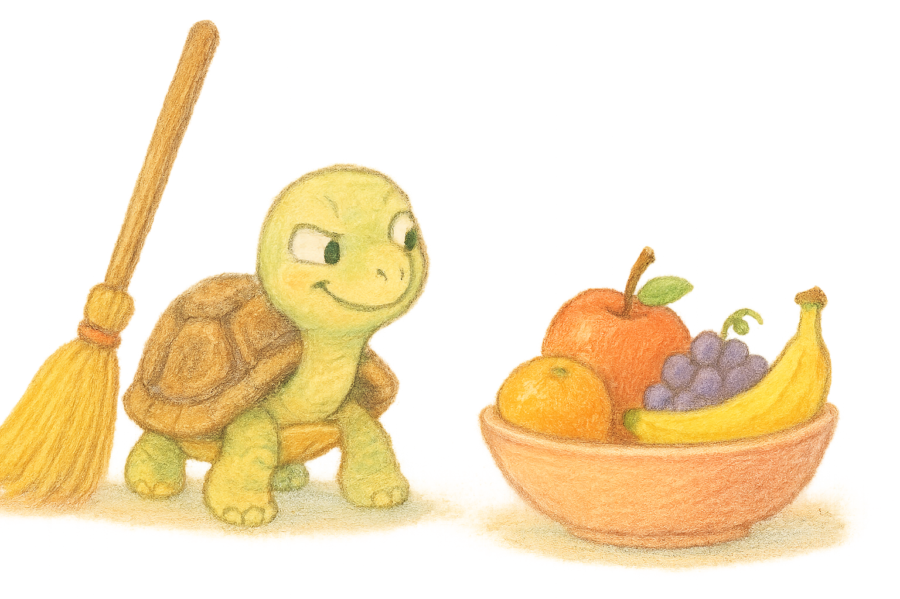
Tortuguita Concha, ven a barrer.
No tengo manos, no tengo pies.
Tortuguita Concha, ven a limpiar.
No tengo manos, no tengo pies.
Tortuguita Concha, ven a bailar.
No tengo manos, no tengo pies.
Tortuguita Concha, ven a comer.
Sí tengo manos, sí tengo pies.
No tengo manos, no tengo pies.
Tortuguita Concha, ven a limpiar.
No tengo manos, no tengo pies.
Tortuguita Concha, ven a bailar.
No tengo manos, no tengo pies.
Tortuguita Concha, ven a comer.
Sí tengo manos, sí tengo pies.
En un plato de ensalada
En un plato de ensalada
todos comen a la vez
y jugando a la baraja
le salió a Paquito, rey.
Sota, espada, oros, ¡rey!
todos comen a la vez
y jugando a la baraja
le salió a Paquito, rey.
Sota, espada, oros, ¡rey!
Se me ha perdido una niña
Se me ha perdido una niña,
cataplín, cataplín, cataplero,
se me ha perdido una niña
en el fondo del jardín.
Yo se la he encontrado,
cataplín, cataplín, cataplero,
yo se la he encontrado
en el fondo del jardín.
Haga el favor de entregarla,
cataplín, cataplín, cataplero,
haga el favor de entregarla
del fondo del jardín.
cataplín, cataplín, cataplero,
se me ha perdido una niña
en el fondo del jardín.
Yo se la he encontrado,
cataplín, cataplín, cataplero,
yo se la he encontrado
en el fondo del jardín.
Haga el favor de entregarla,
cataplín, cataplín, cataplero,
haga el favor de entregarla
del fondo del jardín.
Los pollos de mi cazuela
Los pollos de mi cazuela
no sirven para comer,
solo para las viuditas
que lo saben componer.
Compone, niña, compone,
ya llega tu marinero
con este bonito traje
que parece un carpintero.
Anoche yo te vi
a la orilla de tu jardín,
moviendo la cinturita
para allá y para acá.
no sirven para comer,
solo para las viuditas
que lo saben componer.
Compone, niña, compone,
ya llega tu marinero
con este bonito traje
que parece un carpintero.
Anoche yo te vi
a la orilla de tu jardín,
moviendo la cinturita
para allá y para acá.
El chiriguare
Cerca ’e la laguna
sale el chiriguare,
cerca ’e la laguna
sale el chiriguare,
con rabo de burro
y boca de bagre.
Juego de danza:
en círculo o en dos filas,
un paso adelante
y un paso atrás.
sale el chiriguare,
cerca ’e la laguna
sale el chiriguare,
con rabo de burro
y boca de bagre.
Juego de danza:
en círculo o en dos filas,
un paso adelante
y un paso atrás.
Alma Llanera
Yo nací en esta ribera
del Arauca vibrador,
soy hermana de la espuma,
de las garzas, de las rosas
y del sol, y del sol.
Me arrulló la viva diana
de la brisa en el palmar,
y por eso tengo el alma
como el alma primorosa
del cristal, del cristal.
Joropo de Venezuela.
Música: Pedro Elías Gutiérrez.
Letra: Rafael Bolívar Coronado.
del Arauca vibrador,
soy hermana de la espuma,
de las garzas, de las rosas
y del sol, y del sol.
Me arrulló la viva diana
de la brisa en el palmar,
y por eso tengo el alma
como el alma primorosa
del cristal, del cristal.
Joropo de Venezuela.
Música: Pedro Elías Gutiérrez.
Letra: Rafael Bolívar Coronado.
Las estrellitas
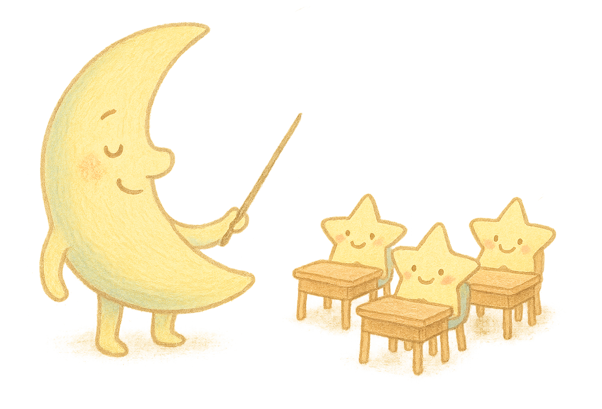
Corre, corre, niño,
pajarito, vuela,
que las estrellitas
ya están en la escuela.
La maestra Luna
dicta la lección
y las estrellitas
ponen atención.
Una estrella chica
se pinta de tiza
y las estrellitas
se mueren de risa.
¡Ja, ja, ja, ja, ja!
¡Jo, jo, jo, jo, jo!
pajarito, vuela,
que las estrellitas
ya están en la escuela.
La maestra Luna
dicta la lección
y las estrellitas
ponen atención.
Una estrella chica
se pinta de tiza
y las estrellitas
se mueren de risa.
¡Ja, ja, ja, ja, ja!
¡Jo, jo, jo, jo, jo!
Sale el sol
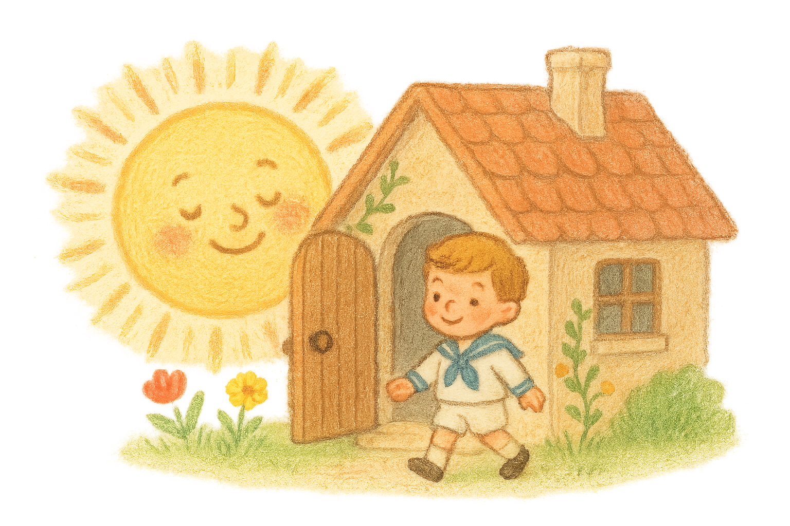
Sale el sol, sale el sol
en la esquina de mi casa.
Voy a ver, voy a ver
la figura solitaria.
Que salga la dama, dama,
vestida de marinero;
que vale más dinero
que estrellas en el cielo.
en la esquina de mi casa.
Voy a ver, voy a ver
la figura solitaria.
Que salga la dama, dama,
vestida de marinero;
que vale más dinero
que estrellas en el cielo.
Doña Ana
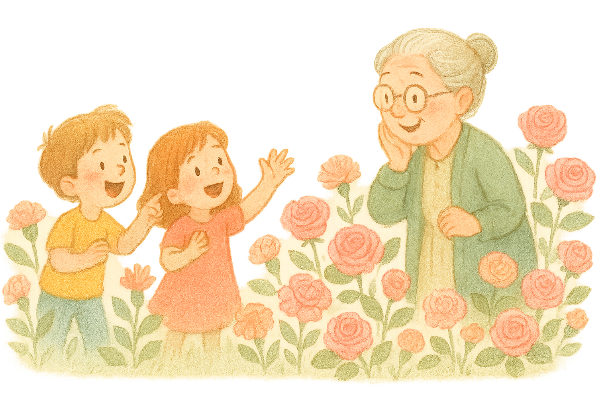
Doña Ana no está aquí,
está en su vergel,
abriendo la rosa,
cerrando el clavel.
¿Dónde está Doña Ana?
—Se está bañando.
—Está cocinando.
—Se está peinando.
—Está durmiendo…
En cada vuelta del corro,
la criada inventa
una nueva respuesta.
está en su vergel,
abriendo la rosa,
cerrando el clavel.
¿Dónde está Doña Ana?
—Se está bañando.
—Está cocinando.
—Se está peinando.
—Está durmiendo…
En cada vuelta del corro,
la criada inventa
una nueva respuesta.
La pájara pinta
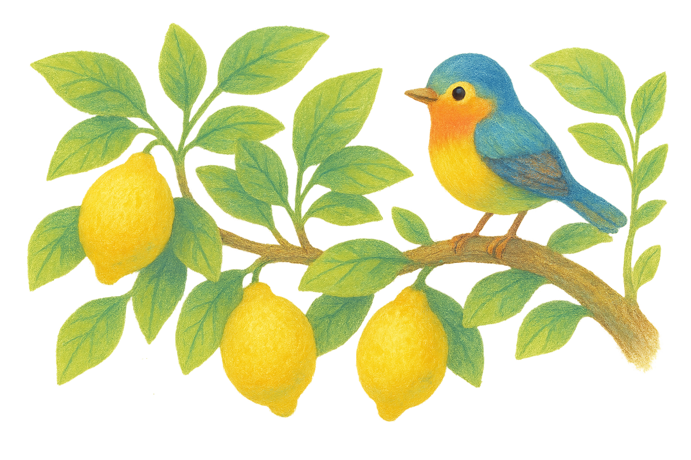
Estaba la pájara pinta
a la sombra de un verde limón;
con las alas cortaba las hojas,
con el pico cortaba la flor.
¡Ay, ay! ¿Cuándo veré a mi amor?
¡Ay, ay! ¿Cuándo lo veré yo?
Me arrodillo a los pies de mi amor:
dame la mano, dame la otra,
dame un besito
que sea de tu boca.
a la sombra de un verde limón;
con las alas cortaba las hojas,
con el pico cortaba la flor.
¡Ay, ay! ¿Cuándo veré a mi amor?
¡Ay, ay! ¿Cuándo lo veré yo?
Me arrodillo a los pies de mi amor:
dame la mano, dame la otra,
dame un besito
que sea de tu boca.